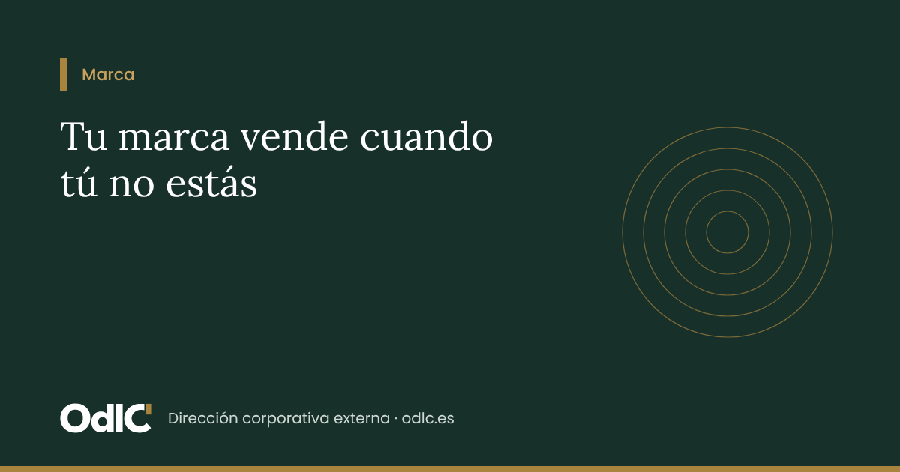

Serie «Marcas que venden» · 1 de 3 — 1) Tu marca vende cuando tú no estás · 2) Si tapas tu nombre, ¿te reconocerían? · 3) Tu web: la primera reunión a la que no te invitan
Ahora mismo, alguien está decidiendo si llama a tu empresa. Está mirando tu web, tu LinkedIn, una propuesta que le reenviaron, y recordando lo que le contó un conocido. Tú no estás en esa conversación. Tu marca, sí.
Se atribuye a Jeff Bezos la frase de que tu marca es lo que dicen de ti cuando sales de la sala. Para una empresa, esa sala es un comité de compras, una charla entre socios o una búsqueda a las once de la noche. Ahí se gana o se pierde la venta, antes de que nadie te llame.
Tu marca dice mucho de tu empresa. Y, bien hecha, vende por ti: cuando el cliente llega, ya viene convencido.
Cinco preguntas que tu marca contesta por ti
Una marca no es un logotipo. Marty Neumeier, autor de The Brand Gap, la define como la sensación que una persona tiene sobre tu empresa: no lo que tú dices que es, sino lo que dicen los demás (O'Reilly). Esa sensación se forma respondiendo, sin que te des cuenta, a cinco preguntas:
| Lo que se pregunta quien os recomienda | Lo que tu marca debería contestar |
|---|---|
| ¿Qué hacen? | El problema concreto que resolvéis, dicho como lo diría el cliente |
| ¿Para quién? | El cliente o el momento en que sois la primera opción |
| ¿Por qué ellos y no otros? | La prueba: experiencia, casos, resultados, criterio |
| ¿Cómo es trabajar con ellos? | Vuestra forma de hacer: método, trato, valores |
| ¿Qué consigo? | La promesa: cómo queda el cliente cuando termináis |
Si las respuestas son vagas, cambian según a quién preguntes o ya no se parecen a lo que hacéis hoy, vuestra marca está trabajando para la competencia.
Una buena marca llega antes que tu comercial
La marca no sustituye a la venta: la adelanta. Cuando hay una reunión, el cliente ya sabe quién eres, confía en ti y acepta mejor tu precio. Los datos lo confirman:
Te eligen antes de hablar contigo. Más de la mitad de los directivos que compran para sus empresas usan el contenido experto de un proveedor para decidir si lo tienen en cuenta (Edelman-LinkedIn, vía Shno).
Te recuerdan cuando les toca comprar. Según la regla 95:5 del profesor John Dawes (Ehrenberg-Bass), solo un 5 % de las empresas busca proveedor en un momento dado; el 95 % comprará más adelante (Marketing Week). La marca es lo que hace que entonces piensen en ti.
Compites menos por precio. Les Binet y Peter Field, tras analizar cientos de campañas del IPA, concluyen que la construcción de marca da resultados más lentos pero acumulativos, mientras que las acciones de venta inmediata se apagan pronto (Alex Murrell).
Tu equipo multiplica el alcance. Según LinkedIn, las redes de los empleados suman de media diez veces más contactos que seguidores tiene la página de la empresa, y lo que comparte una persona recibe el doble de clics (LinkedIn).
La gente se fía de quien sabe. En el Edelman Trust Barometer, los expertos técnicos y académicos están año tras año entre las voces más creíbles para hablar de una empresa (PR Daily).
La consultora Interbrand, que dirige el español Gonzalo Brujó, lo pone en cifras en su informe Best Global Brands 2026: según su análisis, cada 1 % que sube el valor de una marca se traduce en un 0,8 % más de cotización al año siguiente (Interbrand). Se mide en grandes empresas que cotizan, pero la lección vale para cualquiera: la marca no es un gasto de imagen, es un activo que sube o baja el valor de lo que has construido.
No cuidar la marca no aparece en ninguna factura. Se nota en los clientes que nunca llegaron a llamarte.
Renovarse sin dejar de ser reconocible
Una marca cambia de dos maneras, y confundirlas sale caro: evolucionar para no envejecer, o reinventarse porque la empresa ya no es la que era.
| Evolución | Rebranding | |
|---|---|---|
| Qué es | Ajustes continuos para que la marca siga pareciendo actual | Un cambio deliberado de posicionamiento, mensaje o identidad |
| Cuándo | Siempre, cada pocos años | Cuando cambian los servicios, los clientes, la propiedad o la etapa de la empresa |
| Qué cambia | Líneas, colores, tipografía, formatos, tono | El mensaje y la promesa; a veces el nombre o la identidad visual |
| Qué se conserva | Casi todo lo que el cliente reconoce | Lo que el cliente reconoce y valora, si encaja con la nueva etapa |
| El riesgo | Quedarse anticuado | Perder el reconocimiento por romper con todo |
Evolucionar: la lección del Porsche 911
Las buenas marcas funcionan como un modelo de coche que lleva décadas en el mercado: cada generación tiene líneas más modernas, pero se reconoce a la primera. El Porsche 911 se presentó en 1963 y desde entonces ha tenido ocho generaciones con tecnología completamente distinta, pero la misma silueta (Supercars.net).
Reinventarse: cambiar sin tirar lo que funciona
Un rebranding es necesario cuando la empresa ha cambiado y la marca se ha quedado atrás. Pero lo que el cliente ya reconoce es un punto de partida, no un estorbo. Dos casos muy conocidos lo recuerdan:
Tropicana (2009). Sustituyó su envase reconocible, la naranja con la pajita, por un diseño más genérico. En menos de dos meses sus ventas en unidades cayeron un 20 % y volvió al diseño anterior (Everything PR).
Gap (2010). Cambió de golpe el logotipo que llevaba unos veinte años usando y, ante la reacción de sus clientes, recuperó el anterior en una semana (CNN Money).
Lo que tus clientes ya reconocen es un activo que vale dinero. Un buen rebranding parte de ahí: decide qué se conserva, qué se renueva y moderniza el resto.
Siete señales de que le toca a tu empresa
Marca las que os describen. Con tres o más, vuestra marca se ha quedado atrás respecto a la empresa.
Habéis cambiado de servicios, de cliente o de tamaño, pero la web y las presentaciones siguen contando lo de antes
Cuando os presentan, os describen de una forma que se queda corta
Cada socio o comercial explica la empresa a su manera
Competís sobre todo por precio, aunque vuestro trabajo vale más
Os llegan clientes que no son los que buscáis
La web, el LinkedIn de la empresa y el de los socios parecen de tres empresas distintas
Os cuesta decir en una frase por qué alguien debería elegiros
La marca es estrategia, no decoración
Tu marca decide a qué clientes llegas, cómo te perciben y a qué precio puedes vender. Por eso no la tratamos como un encargo de diseño, sino como una pieza más de la estrategia de la empresa, junto al negocio, la organización y la forma de vender, en lo digital y en lo físico. Antes de pensar en cómo se ve, definimos qué tiene que conseguir.
Y con un criterio que lo guía todo: simplificar. Cuando la información se reduce a lo esencial, el cliente entiende antes, decide mejor y confía más. Con lo visual por delante y una marca que tiene que funcionar del móvil a la fachada de una oficina, la claridad es lo que hace que te elijan.
Cómo trabajamos: el Método OdlC
En OdlC somos una firma de estrategia, y la marca es una de las áreas que mejor conocemos. Nuestro equipo os guía en cada decisión: qué debe decir la marca, cómo tiene que verse, qué conservar, qué cambiar y cómo protegerla. Y os ahorra tiempo y quebraderos de cabeza: definimos la marca con vosotros y después encargamos, filtramos y dirigimos el trabajo de nuestros estudios asociados, desde agencias de primer nivel hasta estudios más pequeños y especializados, según el proyecto y el presupuesto, o de la agencia que ya trabaja con vosotros si lo preferís. Lo hacemos con el mismo método con el que trabajamos todo lo demás: observar, decidir, liderar y consolidar.
Lo que recibís es el trabajo hecho: tres propuestas cerradas, bien presentadas y alineadas con vuestra estrategia, para que elijáis. Sin rondas interminables ni ocurrencias que no responden a lo que necesita el negocio.
O · Observar. Escuchamos a socios, equipo y algunos clientes, revisamos todo lo que hoy comunica la empresa y comprobamos qué marcas tenéis registradas. Resultado: cómo os perciben de verdad y qué conviene conservar.
D · Decidir. Con vosotros definimos qué debe decir la marca, para quién, qué tiene que conseguir y con qué presupuesto. Resultado: un encargo preciso, alineado con vuestra estrategia.
L · Liderar. Elegimos el estudio adecuado, dirigimos su trabajo y filtramos todo lo que no responde a la estrategia. Antes de enseñaros nada, comprobamos que las propuestas no chocan con marcas ya registradas. Os presentamos tres opciones cerradas, aplicadas a vuestras piezas reales; elegís, y registramos la marca en la Oficina Española de Patentes y Marcas y, si vuestro negocio lo requiere, en la oficina de marcas de la Unión Europea. Resultado: una marca elegida, registrada y lista para usar.
C · Consolidar. Manual de marca, plantillas y despliegue en todos los puntos de contacto; seguimiento del registro y de sus renovaciones; y comprobación de que funciona: que os presentan como queréis, que llegan los clientes que buscáis y que negociáis menos el precio. Resultado: una marca coherente y protegida, año tras año.
Un mismo equipo os acompaña de principio a fin: os guía en cada decisión, dirige el trabajo de diseño y responde del resultado.
El siguiente paso: un diagnóstico estratégico de marca
Analizamos si vuestra marca acompaña a vuestra estrategia: qué transmite hoy, dónde se contradice con lo que queréis conseguir y qué puntos de contacto tienen más peso comercial. El resultado es un informe breve, con conclusiones y prioridades, para decidir con criterio si conviene evolucionar la marca, replantearla o mantenerla, y con qué estudio ejecutarlo.
Si en las siete señales habéis reconocido tres o más, es el punto de partida natural.
En la próxima entrega: «Si tapas tu nombre, ¿te reconocerían?», cómo llevar tu marca a cada producto, documento y punto de contacto.
Fuentes
Neumeier, M. The Brand Gap — O'Reilly
Edelman-LinkedIn, B2B Thought Leadership Impact Report — Shno
Dawes, J. Regla 95:5 — Marketing Week
Binet, L. y Field, P. The Long and the Short of It — Alex Murrell
Interbrand, Best Global Brands 2026 — Interbrand
LinkedIn Elevate — Infografía
Edelman Trust Barometer — PR Daily
Sharp, B. y Romaniuk, J. Activos distintivos — The Drum
Porsche 911 — Supercars.net
Tropicana 2009 — Everything PR
Gap 2010 — CNN Money
¿Quiere revisar este tema en su empresa o su patrimonio? Lo revisamos con usted en una sesión de 30 minutos sin coste.
Reservar sesiónFundadora de ODLC. 25 años construyendo y dirigiendo la estructura corporativa de un grupo de inversión inmobiliaria y el patrimonio de su propiedad. Graduada en Derecho con el Máster de Acceso a la Abogacía. Ayuda a pymes, familias e inversores a poner en marcha y mantener en orden sus sociedades.
Quiénes somos · Reservar una sesiónEsto llega cada viernes en «Empresas y Patrimonios en Orden»
La newsletter de ODLC: corporate, cumplimiento, puesta en marcha y family office, una cuestión práctica cada semana.